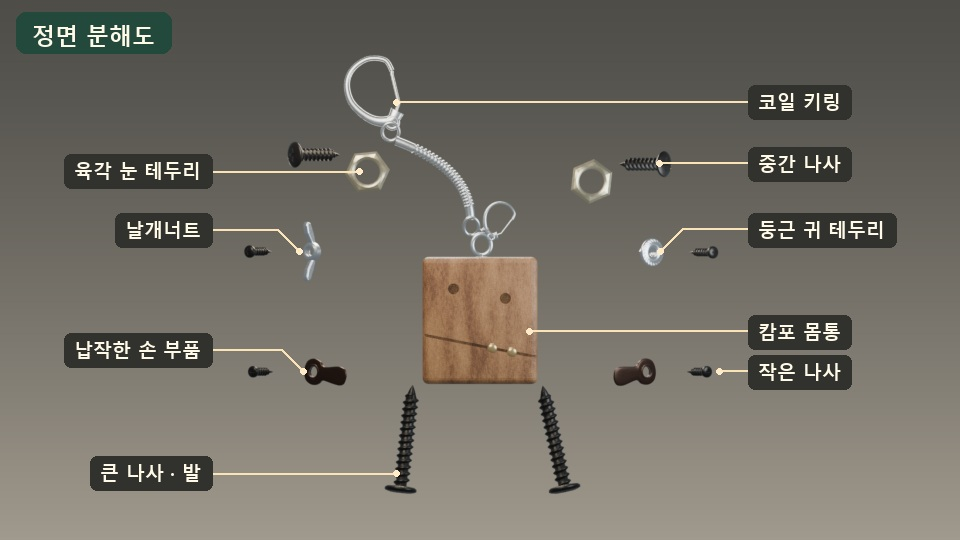

레트로봇 조립 안내
몸통의 얼굴이 나를 향하게 놓고 시작하세요. 오른쪽과 왼쪽은 보는 사람 기준입니다.
시작
정면 분해도
완성품이 펼쳐지면 눈·귀·손·발의 위치와 나사 크기를 살펴보세요. 다시 모인 뒤에는 원하는 단계를 골라 볼 수 있어요.
영상을 불러오지 못했어요. 영상 파일 열기
부품 이름과 나사 크기
중간 나사 2개는 육각 눈 테두리 2개에, 작은 나사 4개는 날개너트·둥근 귀 테두리·납작한 손 2개에 써요. 큰 나사 2개는 그대로 발이 돼요. 캄포 몸통 위에는 키링이 달려 있어요.
